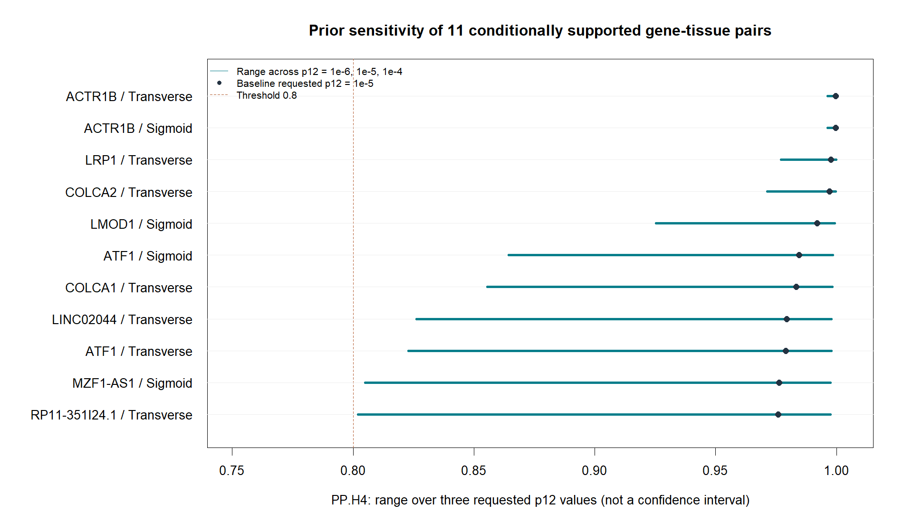

2026-09-23 | 현재 확보 자료에 대한 탐색적 분석의 최종 정리
체크섬 181건과 원본 색인의 좌표 조회 96건을 대조했습니다. 확인 대상에서 추출·계산 과정의 누락은 발견되지 않았으며 복구된 행은 0개입니다. 모든 미공유 SNP를 전장 유전체 수준에서 점검했다는 뜻은 아닙니다.
GCST90129505의 GRCh38 대장암 GWAS와 GTEx v8 Colon_Sigmoid/Colon_Transverse를 사용했습니다. 1차 중첩 탐색에서 선정한 102개 후보 중 100개·144개 조합에 실제 coloc을 수행했습니다. 다른 암 아형이나 종양 특이 효과를 따로 분석하지 않았습니다.
lead ±500 kb 병합 거리 창, beta/SE² 및 실측 sdY, coloc 5.2.3의 형질별 단일 원인 변이 가정을 사용했습니다. p1=p2=10⁻⁴, 요청 p12=10⁻⁶·10⁻⁵·10⁻⁴로 432회 실행했습니다. 29개 조합의 패키지 prior 자동 조정은 실제 적용값과 함께 원래 결과에 남아 있습니다. p값으로 변이를 선별하지 않았습니다.
432개 posterior 모두 별도 Python 계산과 일치했습니다(최대 절대 차이 약 5×10⁻¹⁶). 수치 재현성 검증은 원본 품질이나 생물학적 타당성을 보증하지 않습니다.
원래 후보 102개와 대상 147개 조합을 모두 유지했습니다. 유전자별 분류는 가장 강한 지지를 보이는 조합을 요약하며 조직별 posterior를 합산하지 않습니다. 같은 등급에서는 대표 조합의 최소 PP.H4 순서입니다. 확률이나 별도 종합점수를 새로 추정한 순위가 아닙니다.
| 분류 | 유전자 | 조합 |
| A: 세 prior 지지·자료 제한 조건부 | 9 | 11 |
| B: 기본 prior 지지·민감 | 9 | 12 |
| C: 큰 prior에서만 지지 | 7 | 8 |
| D: 시험 범위 기준 미충족 | 75 | 113 |
| E: 자료 부재·보류 | 2 | 3 |
기본 prior에서 기준을 충족한 18개 유전자 중 9개는 작은 prior에서 지지가 낮아집니다. A 등급 9개 유전자도 공통 변이 집합과 구간 가정에 조건부인 검토 후보입니다.
| 유전자 | 지지 조직 | 대표 기본 PP.H4 | 대표 최소 PP.H4 | 대표 SNP | 연관 방향 |
| ACTR1B | Colon_Sigmoid;Colon_Transverse | 0.9996 | 0.9963 | rs11692435 | 발현 증가 방향과 CRC odds 감소 방향 일치 |
| LRP1 | Colon_Transverse | 0.9977 | 0.9771 | rs715948 | 발현 증가 방향과 CRC odds 증가 방향 일치 |
| COLCA2 | Colon_Transverse | 0.9971 | 0.9714 | rs3087967 | 발현 증가 방향과 CRC odds 감소 방향 일치 |
| LMOD1 | Colon_Sigmoid | 0.9920 | 0.9254 | rs4494199 | 발현 증가 방향과 CRC odds 감소 방향 일치 |
| ATF1 | Colon_Sigmoid;Colon_Transverse | 0.9846 | 0.8644 | rs11169571 | 발현 증가 방향과 CRC odds 증가 방향 일치 |
| COLCA1 | Colon_Transverse | 0.9834 | 0.8555 | rs3087967 | 발현 증가 방향과 CRC odds 감소 방향 일치 |
| LINC02044 | Colon_Transverse | 0.9794 | 0.8263 | rs13086367 | 발현 증가 방향과 CRC odds 증가 방향 일치 |
| MZF1-AS1 | Colon_Sigmoid | 0.9763 | 0.8049 | rs73068329 | 발현 증가 방향과 CRC odds 감소 방향 일치 |
| RP11-351I24.1 | Colon_Transverse | 0.9759 | 0.8020 | rs57153895 | 발현 증가 방향과 CRC odds 증가 방향 일치 |
방향은 대표 조합에서 H4 조건부 SNP 확률이 가장 큰 변이의 같은 효과 대립유전자 기준 beta 부호를 비교한 것입니다. 대표 변이의 SNP.PP.H4는 H4가 참이라는 조건부 값이며, 해당 변이의 인과 확률이나 유전자 전체의 매개 효과가 아닙니다. 조직별 방향과 원래 beta는 전체 표에 보존했습니다.
자료 누락을 해결했다고 간주해 후보를 확정하지 않았습니다. 특히 137개 조합의 최강 GWAS 변이 부재와 원본의 극단 beta 추정치, 제외된 lead, 거리 구간/복수 신호가 후속 검토 대상입니다. A 등급부터 이 항목을 확인한 뒤 ancestry에 맞는 LD·조건부 분석, 독립 대장 eQTL 및 기능 검증으로 이어가야 합니다. 두 조직은 기증자를 공유하므로 독립 재현이 아닙니다.
D 등급은 시험한 모델에서 기준 미충족이며 생물학적 관련성이 없다는 뜻이 아닙니다. E 등급은 미분석이며 음성 결과로 취급하지 않습니다. 유의 eQTL 중첩으로 후보를 선정했으므로 전체 유전자 FDR·enrichment·약물 표적 확정으로 확대 해석하지 않습니다.

| 유전자 | 분류 | 대표 조직 | 기본 PP.H4 | 최소 PP.H4 | 검토 표시 |
|---|---|---|---|---|---|
| ACTR1B | A: 세 prior 지지·자료 제한 조건부 | Colon_Transverse | 0.9996 | 0.9963 | missing_strongest_gwas |
| LRP1 | A: 세 prior 지지·자료 제한 조건부 | Colon_Transverse | 0.9977 | 0.9771 | missing_strongest_gwas;region_lead_missing |
| COLCA2 | A: 세 prior 지지·자료 제한 조건부 | Colon_Transverse | 0.9971 | 0.9714 | missing_strongest_gwas;weak_signal_warning |
| LMOD1 | A: 세 prior 지지·자료 제한 조건부 | Colon_Sigmoid | 0.9920 | 0.9254 | missing_strongest_gwas |
| ATF1 | A: 세 prior 지지·자료 제한 조건부 | Colon_Sigmoid | 0.9846 | 0.8644 | missing_strongest_gwas |
| COLCA1 | A: 세 prior 지지·자료 제한 조건부 | Colon_Transverse | 0.9834 | 0.8555 | missing_strongest_gwas |
| LINC02044 | A: 세 prior 지지·자료 제한 조건부 | Colon_Transverse | 0.9794 | 0.8263 | missing_strongest_gwas |
| MZF1-AS1 | A: 세 prior 지지·자료 제한 조건부 | Colon_Sigmoid | 0.9763 | 0.8049 | missing_strongest_gwas;partial_window_coverage |
| RP11-351I24.1 | A: 세 prior 지지·자료 제한 조건부 | Colon_Transverse | 0.9759 | 0.8020 | missing_strongest_gwas |
| SMAD9 | B: 기본 prior 지지·민감 | Colon_Transverse | 0.9576 | 0.6933 | missing_strongest_gwas |
| NID2 | B: 기본 prior 지지·민감 | Colon_Transverse | 0.9557 | 0.6831 | missing_strongest_gwas |
| LIMA1 | B: 기본 prior 지지·민감 | Colon_Transverse | 0.9392 | 0.6070 | missing_strongest_gwas |
| NIN | B: 기본 prior 지지·민감 | Colon_Transverse | 0.9280 | 0.5631 | missing_strongest_gwas |
| SFMBT1 | B: 기본 prior 지지·민감 | Colon_Transverse | 0.9262 | 0.5566 | missing_strongest_gwas;region_lead_missing |
| ABHD12B | B: 기본 prior 지지·민감 | Colon_Transverse | 0.9243 | 0.5498 | missing_strongest_gwas |
| ZNF274 | B: 기본 prior 지지·민감 | Colon_Sigmoid | 0.8860 | 0.4374 | missing_strongest_gwas;partial_window_coverage;weak_signal_warning |
| CERS5 | B: 기본 prior 지지·민감 | Colon_Sigmoid | 0.8821 | 0.4279 | missing_strongest_gwas;partial_window_coverage |
| TRIM4 | B: 기본 prior 지지·민감 | Colon_Sigmoid | 0.8713 | 0.4038 | missing_strongest_gwas |
| RTEL1 | C: 큰 prior에서만 지지 | Colon_Sigmoid | 0.7814 | 0.2633 | missing_strongest_gwas |
| RP5-908M14.10 | C: 큰 prior에서만 지지 | Colon_Transverse | 0.7327 | 0.2151 | missing_strongest_gwas |
| C11orf53 | C: 큰 prior에서만 지지 | Colon_Transverse | 0.7241 | 0.2079 | missing_strongest_gwas |
| WBSCR27 | C: 큰 prior에서만 지지 | Colon_Sigmoid | 0.5447 | 0.1069 | missing_strongest_gwas |
| STK19 | C: 큰 prior에서만 지지 | Colon_Transverse | 0.4477 | 0.0750 | missing_strongest_gwas;partial_window_coverage;region_lead_missing |
| STK39 | C: 큰 prior에서만 지지 | Colon_Transverse | 0.3818 | 0.0582 | missing_strongest_gwas |
| RP4-647J21.1 | C: 큰 prior에서만 지지 | Colon_Transverse | 0.2918 | 0.0396 | missing_strongest_gwas |
| RP11-5O17.1 | D: 시험 범위 기준 미충족 | Colon_Transverse | 0.2559 | 0.0333 | missing_strongest_gwas;region_lead_missing |
| CHRDL2 | D: 시험 범위 기준 미충족 | Colon_Sigmoid | 0.2414 | 0.0308 | missing_strongest_gwas;weak_signal_warning |
| SHISA4 | D: 시험 범위 기준 미충족 | Colon_Transverse | 0.2185 | 0.0272 | missing_strongest_gwas |
| POU5F1B | D: 시험 범위 기준 미충족 | Colon_Transverse | 0.2058 | 0.0253 | missing_strongest_gwas |
| PCNT | D: 시험 범위 기준 미충족 | Colon_Transverse | 0.1776 | 0.0211 | missing_strongest_gwas;partial_window_coverage |
| CYP21A2 | D: 시험 범위 기준 미충족 | Colon_Transverse | 0.1330 | 0.0151 | missing_strongest_gwas;package_prior_adjustment;region_lead_missing |
| GJC3 | D: 시험 범위 기준 미충족 | Colon_Sigmoid | 0.0790 | 0.0085 | missing_strongest_gwas |
| RP11-676J12.7 | D: 시험 범위 기준 미충족 | Colon_Sigmoid | 0.0669 | 0.0071 | missing_strongest_gwas |
| TMEM110 | D: 시험 범위 기준 미충족 | Colon_Sigmoid | 0.0569 | 0.0060 | missing_strongest_gwas;region_lead_missing |
| ABHD11-AS1 | D: 시험 범위 기준 미충족 | Colon_Sigmoid | 0.0242 | 0.0025 | missing_strongest_gwas |
| RP5-908M14.9 | D: 시험 범위 기준 미충족 | Colon_Sigmoid | 0.0209 | 0.0021 | missing_strongest_gwas |
| CNPY4 | D: 시험 범위 기준 미충족 | Colon_Transverse | 0.0128 | 0.0013 | missing_strongest_gwas |
| PYGL | D: 시험 범위 기준 미충족 | Colon_Transverse | 0.0099 | 0.0010 | missing_strongest_gwas |
| RP4-605O3.4 | D: 시험 범위 기준 미충족 | Colon_Sigmoid | 0.0095 | 0.0010 | missing_strongest_gwas;partial_window_coverage |
| DDR1 | D: 시험 범위 기준 미충족 | Colon_Sigmoid | 0.0062 | 0.0006 | missing_strongest_gwas;package_prior_adjustment;weak_signal_warning |
| RP11-181K3.4 | D: 시험 범위 기준 미충족 | Colon_Transverse | 0.0018 | 0.0002 | missing_strongest_gwas;weak_signal_warning |
| DCBLD1 | D: 시험 범위 기준 미충족 | Colon_Sigmoid | 0.0008 | 0.0001 | missing_strongest_gwas |
| TOB2P1 | D: 시험 범위 기준 미충족 | Colon_Sigmoid | 0.0007 | 0.0001 | missing_strongest_gwas;partial_window_coverage;region_lead_missing |
| TMBIM1 | D: 시험 범위 기준 미충족 | Colon_Transverse | 0.0007 | 0.0001 | missing_strongest_gwas |
| ASAH2B | D: 시험 범위 기준 미충족 | Colon_Transverse | 0.0003 | 0.0000 | missing_strongest_gwas |
| ZNF584 | D: 시험 범위 기준 미충족 | Colon_Sigmoid | 0.0003 | 0.0000 | missing_strongest_gwas;partial_window_coverage |
| ZFP57 | D: 시험 범위 기준 미충족 | Colon_Sigmoid | 0.0002 | 0.0000 | missing_strongest_gwas;partial_window_coverage;region_lead_missing |
| PRRT1 | D: 시험 범위 기준 미충족 | Colon_Transverse | 0.0002 | 0.0000 | missing_strongest_eqtl;missing_strongest_gwas;package_prior_adjustment;region_lead_missing |
| TRPC6 | D: 시험 범위 기준 미충족 | Colon_Transverse | 0.0002 | 0.0000 | missing_strongest_gwas |
| PILRA | D: 시험 범위 기준 미충족 | Colon_Transverse | 0.0002 | 0.0000 | missing_strongest_gwas |
| ZNF132 | D: 시험 범위 기준 미충족 | Colon_Transverse | 0.0001 | 0.0000 | missing_strongest_gwas;partial_window_coverage |
| PILRB | D: 시험 범위 기준 미충족 | Colon_Sigmoid | 0.0001 | 0.0000 | missing_strongest_gwas |
| STAG3L5P | D: 시험 범위 기준 미충족 | Colon_Sigmoid | 0.0001 | 0.0000 | missing_strongest_gwas |
| HCG23 | D: 시험 범위 기준 미충족 | Colon_Transverse | 0.0000 | 0.0000 | missing_strongest_gwas;package_prior_adjustment;region_lead_missing |
| TCF19 | D: 시험 범위 기준 미충족 | Colon_Sigmoid | 0.0000 | 0.0000 | missing_strongest_gwas;package_prior_adjustment |
| TMEM258 | D: 시험 범위 기준 미충족 | Colon_Sigmoid | 0.0000 | 0.0000 | missing_strongest_gwas |
| FADS1 | D: 시험 범위 기준 미충족 | Colon_Sigmoid | 0.0000 | 0.0000 | missing_strongest_gwas |
| CTD-2021H9.3 | D: 시험 범위 기준 미충족 | Colon_Transverse | 0.0000 | 0.0000 | missing_strongest_gwas |
| MCM3AP-AS1 | D: 시험 범위 기준 미충족 | Colon_Sigmoid | 0.0000 | 0.0000 | missing_strongest_gwas;partial_window_coverage |
| ASAH2 | D: 시험 범위 기준 미충족 | Colon_Transverse | 0.0000 | 0.0000 | missing_strongest_gwas;partial_window_coverage |
| TRIM27 | D: 시험 범위 기준 미충족 | Colon_Sigmoid | 0.0000 | 0.0000 | missing_strongest_gwas;region_lead_missing |
| AP001469.9 | D: 시험 범위 기준 미충족 | Colon_Sigmoid | 0.0000 | 0.0000 | missing_strongest_gwas;partial_window_coverage |
| HCG22 | D: 시험 범위 기준 미충족 | Colon_Transverse | 0.0000 | 0.0000 | missing_strongest_eqtl;missing_strongest_gwas;package_prior_adjustment |
| HCP5B | D: 시험 범위 기준 미충족 | Colon_Transverse | 0.0000 | 0.0000 | missing_strongest_gwas;partial_window_coverage;region_lead_missing |
| ANKRD36 | D: 시험 범위 기준 미충족 | Colon_Sigmoid | 0.0000 | 0.0000 | missing_strongest_gwas |
| LINC00094 | D: 시험 범위 기준 미충족 | Colon_Transverse | 0.0000 | 0.0000 | |
| ITIH4 | D: 시험 범위 기준 미충족 | Colon_Transverse | 0.0000 | 0.0000 | missing_strongest_gwas;region_lead_missing |
| BRD3 | D: 시험 범위 기준 미충족 | Colon_Transverse | 0.0000 | 0.0000 | |
| GNA12 | D: 시험 범위 기준 미충족 | Colon_Transverse | 0.0000 | 0.0000 | missing_strongest_gwas |
| HLA-L | D: 시험 범위 기준 미충족 | Colon_Sigmoid | 0.0000 | 0.0000 | missing_strongest_gwas;partial_window_coverage;region_lead_missing |
| SERBP1P3 | D: 시험 범위 기준 미충족 | Colon_Transverse | 0.0000 | 0.0000 | missing_strongest_gwas;region_lead_missing |
| RFT1 | D: 시험 범위 기준 미충족 | Colon_Transverse | 0.0000 | 0.0000 | missing_strongest_gwas;region_lead_missing |
| ZNF165 | D: 시험 범위 기준 미충족 | Colon_Sigmoid | 0.0000 | 0.0000 | missing_strongest_gwas;partial_window_coverage;region_lead_missing |
| HLA-DRB1 | D: 시험 범위 기준 미충족 | Colon_Transverse | 0.0000 | 0.0000 | missing_strongest_gwas;package_prior_adjustment;region_lead_missing |
| SPATC1L | D: 시험 범위 기준 미충족 | Colon_Sigmoid | 0.0000 | 0.0000 | missing_strongest_gwas;partial_window_coverage |
| YBEY | D: 시험 범위 기준 미충족 | Colon_Sigmoid | 0.0000 | 0.0000 | missing_strongest_gwas;partial_window_coverage |
| HLA-DRB9 | D: 시험 범위 기준 미충족 | Colon_Transverse | 0.0000 | 0.0000 | missing_strongest_gwas;package_prior_adjustment;region_lead_missing |
| CABLES2 | D: 시험 범위 기준 미충족 | Colon_Sigmoid | 0.0000 | 0.0000 | missing_strongest_gwas |
| POU5F1 | D: 시험 범위 기준 미충족 | Colon_Transverse | 0.0000 | 0.0000 | missing_strongest_gwas;package_prior_adjustment |
| RP11-129J12.1 | D: 시험 범위 기준 미충족 | Colon_Sigmoid | 0.0000 | 0.0000 | |
| HLA-DQB1-AS1 | D: 시험 범위 기준 미충족 | Colon_Sigmoid | 0.0000 | 0.0000 | missing_strongest_gwas;package_prior_adjustment;region_lead_missing |
| ZSCAN31 | D: 시험 범위 기준 미충족 | Colon_Transverse | 0.0000 | 0.0000 | missing_strongest_gwas;region_lead_missing |
| CCHCR1 | D: 시험 범위 기준 미충족 | Colon_Sigmoid | 0.0000 | 0.0000 | missing_strongest_gwas;package_prior_adjustment |
| TMEM116 | D: 시험 범위 기준 미충족 | Colon_Sigmoid | 0.0000 | 0.0000 | missing_strongest_gwas |
| ZSCAN26 | D: 시험 범위 기준 미충족 | Colon_Transverse | 0.0000 | 0.0000 | missing_strongest_gwas;partial_window_coverage;region_lead_missing |
| C4A | D: 시험 범위 기준 미충족 | Colon_Transverse | 0.0000 | 0.0000 | missing_strongest_gwas;partial_window_coverage |
| ZNF603P | D: 시험 범위 기준 미충족 | Colon_Transverse | 0.0000 | 0.0000 | missing_strongest_gwas;partial_window_coverage;region_lead_missing |
| FADS2 | D: 시험 범위 기준 미충족 | Colon_Transverse | 0.0000 | 0.0000 | missing_strongest_gwas |
| RP11-378A13.1 | D: 시험 범위 기준 미충족 | Colon_Transverse | 0.0000 | 0.0000 | missing_strongest_gwas |
| PSORS1C3 | D: 시험 범위 기준 미충족 | Colon_Sigmoid | 0.0000 | 0.0000 | missing_strongest_gwas;package_prior_adjustment |
| LINC01475 | D: 시험 범위 기준 미충족 | Colon_Sigmoid | 0.0000 | 0.0000 | |
| HLA-C | D: 시험 범위 기준 미충족 | Colon_Transverse | 0.0000 | 0.0000 | missing_strongest_gwas;package_prior_adjustment |
| LAMC2 | D: 시험 범위 기준 미충족 | Colon_Sigmoid | 0.0000 | 0.0000 | missing_strongest_gwas |
| HLA-DRB5 | D: 시험 범위 기준 미충족 | Colon_Transverse | 0.0000 | 0.0000 | missing_strongest_eqtl;missing_strongest_gwas;package_prior_adjustment;region_lead_missing |
| HLA-DRB6 | D: 시험 범위 기준 미충족 | Colon_Transverse | 0.0000 | 0.0000 | missing_strongest_gwas;package_prior_adjustment;region_lead_missing |
| HLA-DQB1 | D: 시험 범위 기준 미충족 | Colon_Transverse | 0.0000 | 0.0000 | missing_strongest_gwas;package_prior_adjustment;region_lead_missing |
| HLA-DQB2 | D: 시험 범위 기준 미충족 | Colon_Transverse | 0.0000 | 0.0000 | missing_strongest_gwas;package_prior_adjustment;region_lead_missing |
| HLA-DQA2 | D: 시험 범위 기준 미충족 | Colon_Transverse | 0.0000 | 0.0000 | missing_strongest_gwas;package_prior_adjustment;region_lead_missing |
| MICA | D: 시험 범위 기준 미충족 | Colon_Transverse | 0.0000 | 0.0000 | missing_strongest_gwas;package_prior_adjustment |
| XXbac-BPG181B23.7 | D: 시험 범위 기준 미충족 | Colon_Transverse | 0.0000 | 0.0000 | missing_strongest_gwas;package_prior_adjustment |
| GPR143 | E: 자료 부재·보류 | Colon_Transverse | — | — | gwas_X_region_unavailable |
| SHROOM2 | E: 자료 부재·보류 | Colon_Sigmoid | — | — | gwas_X_region_unavailable |